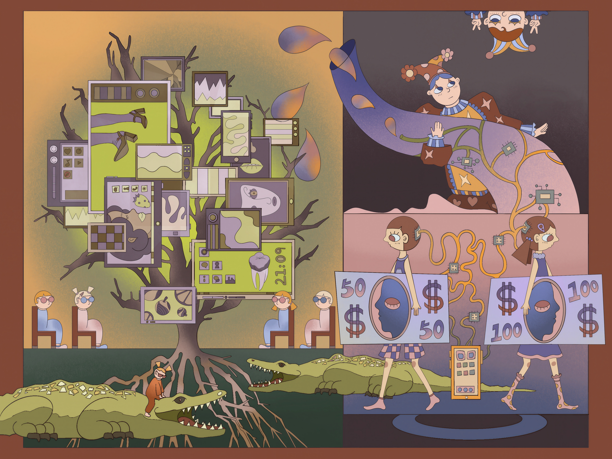
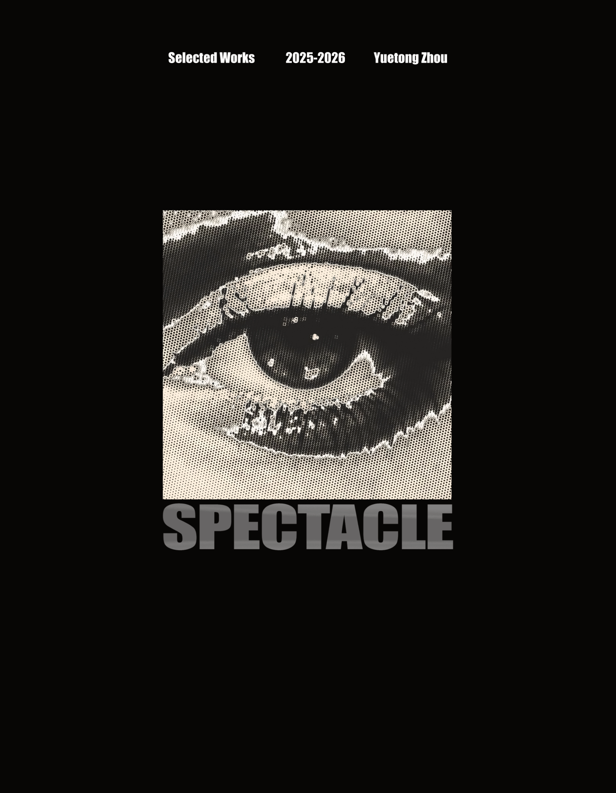

This sketch continues my earlier illustration series Spectacle, which explores our relationship with screens, images, and media. In this version, I wanted to translate those ideas into code. Repeated TV screens become a pattern, while the timer and rotation create a continuous loop of time and movement.
This idea also connects to Guy Debord's The Society of the Spectacle, which inspired my earlier Spectacle illustration series. Debord discusses how images and media can gradually replace direct experience, turning people into spectators of everyday life. In this sketch, the repeated screens, looping timer, and continuous rotation continue this idea. The screens keep moving and repeating, creating a cycle that never really ends.

